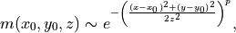
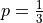
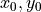

roadnetwork_rg.intensity module¶
Various implementation of IntensityFunction
It provides some functions to be used for generating non-homogenous a
PointProcess, (either using
SpatialPoissonPointProcess or
MarkovChainMonteCarlo method) by implementing the interface used for
thinning points offered by the point process as candidates.
- class AdaptivePotentialFunction(size, city_sizes)[source]¶
Bases:
roadnetwork_rg.intensity.MarkovChainMonteCarloPotentialFunctionImplements a potential function that is a super-Gaussian distribution.
- property potential_map: PIL.Image.Image¶
It is the current values of potential function over the bounding window.
- update(value)[source]¶
It updates the function based on whether the candidate is accepted or rejected.
Also updates the monopole cache if the monopole has not been previously calculated. A monopole is a collection of values the function is updated by superposing them over existing values. A monopole
 is of a super-Gaussian distribution thus:
is of a super-Gaussian distribution thus:
where ,  is the coordinates of the monopole’s origin and value is
 .
.- Parameters
value (
PointType) – It is the candidate where the potential function being updated.
- class ExponentialZCompositeFunction[source]¶
Bases:
roadnetwork_rg.intensity.MarkovChainMonteCarloCompositeFunctionIt is the implementation of an exponential function
- class MarkovChainMonteCarloCompositeFunction[source]¶
Bases:
objectIt is an abstract function for implementing composite functions.
It is used by
MarkovChainMonteCarloIntensityFunctionto calculate value used for thinning a point process. A composite function takes two other function a kernel and a potential function and computes a value based on them according the implemented arithmetics.
- class MarkovChainMonteCarloIntensityFunction(rate, kernel_image, potential_func, composite_func)[source]¶
Bases:
roadnetwork_rg.point_process.IntensityFunctionIt is an implementation of
IntensityFunctionused byMarkovChainMonteCarlo.It is used for deciding thinning actions based on a
MarkovChainMonteCarloCompositeFunction.- __init__(rate, kernel_image, potential_func, composite_func)[source]¶
Initializes an intensity function.
- Parameters
rate (
Union[int,float]) – See:PointProcess.kernel_image (
PIL.Image.Image) – It is an image containing the values of kernel function corresponding to pixel values in the x and y coordinates of the image.potential_func (
MarkovChainMonteCarloPotentialFunction) – It describes the pair-wise interaction of generated points.kernel_image – It contains the values of a kernel function.
composite_func (
MarkovChainMonteCarloCompositeFunction) – It computes the final value of thinning process based of potential and kernel functions.
- class MarkovChainMonteCarloPotentialFunction[source]¶
Bases:
objectIt is an abstract class for implementing potential functions.
A potential function describes the point-wise interaction between the generated points. It provides an interface used by
MarkovChainMonteCarloIntensityFunction, (see also: there).
- class SpatialPoissonPointProcessCompositeFunction[source]¶
Bases:
roadnetwork_rg.intensity.MarkovChainMonteCarloCompositeFunctionIt is an abstract function for implementing composite functions.
It is used in
SpatialPoissonPointProcessmethod to generate a point process. It is differ from parent class by having anexpectedmethod (see: there).- property expected: float¶
It should be the expected value of the implemented arithmetics.
This allows
SpatialPoissonPointProcessIntensityFunctionto scalerateso that the generated point process has same density.- Returns
It is the expected value of the composite function.
- Return type
- class SpatialPoissonPointProcessIntensityFunction(rate, kernel_image, potential_func, composite_func)[source]¶
Bases:
roadnetwork_rg.intensity.MarkovChainMonteCarloIntensityFunctionIt is an implementation of
IntensityFunctionused bySpatialPoissonPointProcess.See:
MarkovChainMonteCarloIntensityFunction.- __init__(rate, kernel_image, potential_func, composite_func)[source]¶
Initializes an intensity function.
Calculates mean of kernel_image to be used by
SpatialPoissonPointProcessPotentialFunction.See also:
MarkovChainMonteCarloIntensityFunction.- Parameters
potential_func (
SpatialPoissonPointProcessPotentialFunction) – It describes the pair-wise interaction of generated points.composite_func (
SpatialPoissonPointProcessPotentialFunction) – It computes the final value of thinning process based of potential and kernel functions.
- class SpatialPoissonPointProcessPotentialFunction[source]¶
Bases:
roadnetwork_rg.intensity.MarkovChainMonteCarloPotentialFunctionIt is an abstract class for implementing potential functions.
See also:
MarkovChainMonteCarloPotentialFunction. It also provides an interface used bySpatialPoissonPointProcessIntensityFunction- property expected: float¶
It is the expected value of the potential function.
- Returns
It is calculated during initialization.
- Return type